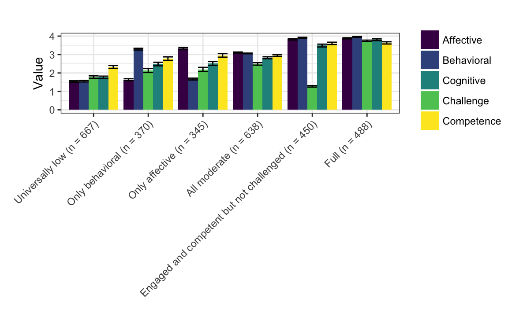
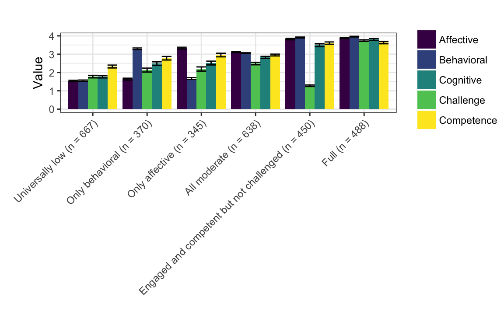

Chapter 4 Results
In this section, I present the results associated with the preliminary analysis and the four research questions.
4.1 Results from the preliminary analysis
4.1.1 Descriptive statistics for study variables
First, descriptive statistics for all of the study variables–overall pre-interest, the five variables that are used to estimate the profiles, are presented. Overall pre-interest and the variables used to estimate the profiles are presented first.
4.1.2 Correlations among study variables
Next, correlations between the variables that are used to create the profiles are presented. These correlations, ranging from .08 to .60 (all were significant), reflect moderate relations among the variables used to construct the profiles.
4.2 Results for Research Question #1
4.2.1 Frequency of work with data
Out of the 248 segments, 12 were codeable for work with data; for these, issues with the video-recordings were the primary source of the missing data. In these cases, youth may have still replied to signals, but it was not possible to code for work with data associated with these responses. Of the 236 code-able segments, 170 (72%) were coded as involving any of the aspects of work with data. Table 4 includes the frequency of the specific aspects of work with data, with interpreting and communicating findings being the most present (occurring in 47% of the segments), followed by generating data (in 45% of the segments), asking questions (in 39%), data modeling (29%), and then making observations (26%).
Note that these results are for codes applied to approximately ten-minute (video-recorded) segments and that the aspects of work with data could co-occur. On average, there were 1.86 (SD = 1.61) aspects of work with data present in each moment. This indicates that, on average, youth were engaged in around two of aspects of the work with data during the program.
We can also examine the breakdown by program (in Table 5), which shows that, descriptively, there exists substantial variability across the programs.
| Aspect of Work With Data | Proportion | N |
|---|---|---|
| Asking Questions | 0.389 | 92 |
| Making Observations | 0.258 | 61 |
| Generating Data | 0.453 | 107 |
| Data Modeling | 0.288 | 68 |
| Communicating Findings | 0.470 | 111 |
| Variable | Asking | Observing | Generating | Modeling | Communicating | Total Segments |
|---|---|---|---|---|---|---|
| Island Explorers | 0.312 | 0.375 | 0.438 | 0.250 | 0.375 | 16 |
| The Ecosphere | 0.625 | 0.417 | 0.500 | 0.292 | 0.500 | 24 |
| Zoology Partners | 0.250 | 0.167 | 0.125 | 0.167 | 0.208 | 24 |
| Marine Investigators | 0.458 | 0.333 | 0.250 | 0.375 | 0.542 | 24 |
| Comunidad de Aprendizaje | 0.327 | 0.182 | 0.400 | 0.273 | 0.327 | 55 |
| Jefferson House | 0.167 | 0.083 | 0.542 | 0.458 | 0.750 | 24 |
| Uptown Architecture | 0.375 | 0.208 | 0.708 | 0.167 | 0.292 | 24 |
| Building Mania | 0.333 | 0.208 | 0.375 | 0.333 | 0.500 | 24 |
| Adventures in Mathematics | 0.583 | 0.292 | 0.542 | 0.458 | 0.750 | 24 |
4.2.2 Nature of work with data
For these results, the different aspects of work with data were looked at in more detail using an open-ended, qualitative approach in order to better understand the nuance of what was going on during these episodes. This coding resulted in approximately three to four sentence notes from each of two raters for every segment and showed the specific nature of work with data.
4.2.2.1 Asking questions or identifying problems
Asking questions occurred in 92 of the segments (as coded by the PQA). In the 92 segments that were coded with asking questions, the open-ended, in-depth analysis identified 36 segments that were focused on asking questions in ways that were clearly focused on work with data, rather than questions of a more general, STEM-focused nature. When the qualitative coding revealed this activity to be focused on asking questions that were focused on work with data, it was often when youth were trying to better understand the phenomenon or problem they were investigating. For example, in a segment during the Ecosphere program in which youth constructed inclined tables to study how water moved throughout the ecosystem, the youth activity leader prompted youth to generate hypotheses of what would happen when water was poured onto the table, before pouring the water. Other segments showed that there were also many segments for which the PQA codes suggested asking questions would be present, but the in-depth analysis revealed were not always always focused on predicting, conjecturing, or hypothesizing. In these cases, the code was applied to instances in which the youth were asking generic questions (i.e., about how they do an assignment) or when the instructor was asking youth questions (i.e., math-related questions). For example, in the Marine Investigators program, youth visited a water treatment site, and were provided opportunities to ask questions about what they saw.
4.2.2.2 Making observations
Making observations occurred in 57 of the segments (as coded by the PQA), 49 which the open-ended coding revealed were focused on observations in ways that indicated work with data, indicating that this code was used in ways that were close to how this aspect of work with data was conceptualized. Many of the times, this code was applied in conjunction with observing phenomenon in the field, or, in the case of engineering-focused programs, noticing what was going on with a particular design. For example, in the Building Mania program, youth constructed Rube Goldberg machines; youth were prompted by the activity leaders to notice how changes in their design led to differences in how far objects were launched or rolled. When qualitative coders determined this was not present, it was usually due to the observations being not of phenomena, but of the instructor. For example, in the Adventures in Mathematics program, instances in which youth observed other youth or the youth activity leader solving a mathematics problem was often coded as involving making observations.
4.2.2.3 Generating data
Generating data occurred in 102 segments (as coded by the PQA), 48 of which the in-depth analysis showed were aligned with the coding frame. When generating data was focused on work with data, youth were writing down observations, recording information from experiments, or recording the results of a trial (in engineering contexts). For example, in the Marine Investigators program, youth collected pieces of recyclable plastic, bringing them back to the classroom and counting them for each location they were collected. When the PQA code indicated that work with data was present, but the subsequent analysis indicated that this practice was not as focused on work with data, per se, this was often when youth were writing down what the youth activity leader was saying, or was focused on collecting specimens (but not writing them down) entering them into a spreadsheet, or otherwise recording them as data. For example, again in the Marine Investigators program, youth used nets to collect saltwater organisms, which they then transported in buckets back to the classroom setting for subsequent analysis. While these specimens could be considered as data, at least in the segment described, youth did not inscribe notes or any other observations on the specimens they were collecting, and so data was not generated (at this stage).
4.2.2.4 Data modeling
Data modeling occurred in 68 segments (as coded by the PQA), 49 which were focused on work with data. Like making observations, for data modeling, there was a high degree of alignment between the PQA codes and what the open-ended coding. When this aspect of work with data was found to be present on the basis of the qualitative coding, youth used mathematical models. For example, in the Comunidad de Aprendizaje program, youth accessed nationally-representative data and were tasked to solve problems, like finding out what percentage of people engage in particular activities, like donating to charity. When the PQA code was present but data modeling was not clearly an example of work with data, it was regularly because the youth activity leader, rather than students, was doing the modeling, or the model was not one that could generate data. For example, in the Marine Investigators program, a youth activity leader used a plush toy seal designed to teach youth about anatomy and the dangers of aquatic mammals consuming trash and recyclables.
4.2.2.5 Interpreting and communicating findings
Codes for interpreting and communicating were present in 103 segments (as coded by the PQA), in-depth, open-ended coding revealed 49 were clearly focused on work with data. When the qualitative coding revealed this aspect of work with data to be present, youth were often sharing what they found from an investigation or the results of using the product they designed. For example, in the Comunidad de Aprendizaje program, youth participated in an activity designed to support their thinking about creating a product to bring to market; the youth activity leaders described this as being akin to the television show the Shark Tank. In one segment, the youth activity leader asks youth to think of an idea that would make an investor willing to invest in; students shared their ideas, describing what their ideas was, why it was a good idea, how much they could sell it for, and what their profit would be, while fielding questions from youth activity leaders and their peers. Interpreting and communicating findings was also commonly present in segments in which youth were debating the findings of an investigation, such as the results of calculations for the amount of recyclables entering waterways (in Marine Investigators). When not focusing on work with data (which was common for this aspect) youth were communicating about topics other than the results of an investigation or design process, such as trying to find out the answer to a question posed by the youth activity leader, or the youth activity leader was who was doing the interpreting and communicating. For example, in the Adventures in Mathematics program, the youth activity leader helped youth to solve problems on a worksheet, asking guiding questions to help youth start to solve problems on their own.
4.3 Results for Research Question #2: What profiles of youth engagement and its conditions emerge from experiential data collected in the programs?
on the basis of the selection criteria you used (you can name them again if you wish), the six profile solution with varying means, equal variances and covariances fixed to 0 emerged as the best fit of the data. This was on the basis of fit statistics, statistical tests, and concerns of interpretability and parsimony. The model demonstrated superior fit on the basis of the information criteria (AIC and BIC) and on the basis of the measure of classification accuracy (entropy). A seven profile solution with the same specifications regarding means, variances and covariances was also a similarly good fit (and is presented in the Appendix), but the 6 profile solution was ultimately chosen on the basis of parsimony and interpretability. For the selected model, presented below, the raw data and the data that are centered to have a mean equal to 0 and a standard deviation of 1 (thus, the y-axis on each of the plots is labeled “Z-score”).
 

This solution is characterized by:
- A universally low profile
- An only behaviorally engaged profile, with moderate levels of behavioral engagement, very low affective engagement, and moderately (low) levels of cognitive engagement and challenge and competence
- An only affectively engaged profile, with moderate levels of affective engagement, low levels of behavioral engagement, and moderately (low) levels of cognitive engagement and challenge and competence
- A all moderate profile, with moderate levels of affective engagement
- An engaged and competent but not challenged profile, characterized by high levels of each of the three dimensions of engagement and of competence, but with low levels of challenge
- A full profile
The number of observations associated with each of the profiles is somewhat balanced, with the universally low profile with the largest number of observations (n = 667), followed by the all moderate profile (n = 638). Each of the other four profiles were associated with 300 to 400 observations.
In summary, after reviewing a wide range of models, a relatively simple model (model 1) with six profiles was selected for use in subsequent analyses. This model has profiles characterized by both varying levels on the dimensions of engagement and perceptions of challenge and competence. In addition, the number of observations across the profiles is relatively balanced.
4.3.1 Sources of variability in momentary profiles
After identifying the model one type, six profile solution, sources of variability in these profiles can be explored in order to anticipate the effects of factors at the youth, momentary, and program levels. First, the proportion of the variability at each of these levels is explored through the use of null, or variance components, models, those that only include grouping (i.e., the variable identifying which youth a response is from, what signal the response is associated with, and from which program the youth and signal were from) factors.
4.3.1.1 Null models
The null models (with only the grouping factors, or random effects, associated with the youth, momentary, and program levels) provide insight into which of these “levels” at which predictors may be able to explain the outcome. For all six profiles, the ICCs at the program level were very small, from 0.00 to 0.023. This suggests that very little variability can be explained simply by the program. For the momentary level, the ICCs were also very small, ranging from 0.004 to 0.011. Finally, the youth-level ICCs ranged from .099 to .427.
Looking across these values, considering variability at the program, momentary, and youth levels, most of the explained variability in the responses is associated with youth; the program and momentary levels were associated with very small values, suggesting that variables at these levels have minimal variability to explain. In turn, this suggests that these variables, including those for work with data, may not have strong effects in terms of their relations with the profiles.
In terms of specific ICCs at the youth level, the value for the youth-level ICC was highest for the full profile, suggesting that some youth have a strong tendency to be fully engaged (possibly due to their initial interest or other individual characteristics and differences). The other profile characterized by a consistent pattern across all of the variables–the universally low profile–had a modest ICC, .265. Finally, a large amount of variability is associated with the residual (variance that is not associated with the program, momentary, or youth levels). This suggests that there is wide variation in students’ responses that may not be readily explained or predicted.
4.3.1.2 Variability in momentary profiles across youth
Variability in terms of the profiles youth report can also be considered. These show that there is substantial variability between youth, in that, when youth, for example, report Full engagement to a greater extent than any other profile of engagement, these youth (on average) report this engagement in just over 60% of their responses. Their other responses were (on average) associated with a mixture of other profiles. Youth who report more Full engagement than any other profile of engagement are the most consistent in reporting one of the profiles of engagement, with youth reporting engagement associated with the All moderate profile doing so just less than 40% of the time (with other profiles being associated with the remainder of their responses).

4.4 Results for Research Question #3: How do data practices relate to youth engagement in the programs?
For this question, models with the aspects of work with data both separate from and together with the youth characteristics were fit. The models only with the aspects of work with data yielded very similar results (see the appendix for more details).
The models with both together were also used as part of research question #4, though they are presented here (and interpreted in the sections for both results). Mixed effects models predicting the probability of membership in each of the six profiles, using the work with data codes as predictors, were specified. Thus each of the rows in the table represents one of the six different models. The only relations with p-values that were below the criterion for statistical significance were for the relations between modeling data and the full profile (\(\beta\) = 0.034 (0.017), p = .020) and between generating data and the full profile (\(\beta\) = 0.027 (0.015), p = .033).
Results of sensitivity analysis for these effects showed that the effect of modeling data on full engagement was more robust than that for generating data (also upon full engagement): 9.835% of the effect of modeling would have to be due to bias to invalidate the inference about its effect, whereas only 1.884% of the effect of generating data would need to be due to bias to invalidate the inference about its effect. In summary, there are few relations between work with data and the profiles, though there were notable effects of modeling and generating data, though they were small effects (i.e., when students are doing this, they are around 3% more likely to be responding in a way associated with the full profile). Further explanations and investigations of these effects are the focus on research question #4 (in terms of the effect of youth characteristics) and are discussed in the next chapter.
4.5 Results for Research Question #4: How do youth characteristics relate to their engagement in summer STEM programs?
For this question, models with the youth characteristics separate from and together with the aspects of work with data were fit. Like for the results for the previous question, the models only with the youth characteristics yielded very similar results; see the appendix. Thus, the models presented in the previous section with both youth characteristics and the aspects of work (see the table above) with data are interpreted here.
These results show that overall pre-interest is associated with the engaged and competent but not challenged profile (\(\beta\) = 0.039 (0.016), p = .009). For this effect, 17.879% would be needed to invalidate the inference, suggesting a moderately robust effect. The effect of being a female was not statistically significant but has a relation of 0.060 (0.037, p = .051) upon the probability of a response being associated with the universally low profile. For the effect of gender upon the universally low profile, 17.843% of the bias would need to be removed (or the effect would need to be larger by this percentage) to sustain the inference. The change in R2 values ranged from .004 to .007, suggesting that pre-interest and other individual characteristics - in addition to the aspects of work with data - have minimal relations with the profiles.
This is more surprising than the similarly minimal relations observed for work with data: as the null models indicate, there were large ICCs (a large proportion of the variability in the outcome variables) at the youth-level (as pre-interest, gender, and URM status are variables associated with this level). This is discussed further in the next chapter. In summary, pre-interest was found to be related to the engaged and competent but not challenged profile to a modest extent. Being female did not demonstrate statistically significant relations with the univerally low profile, though some moderately-sized effects that were nearly statistically significant were observed and interpreted in terms of how much bias would need to be reduced (or how much the larger the effect would need to be) in order for this relation to be statistically significant.